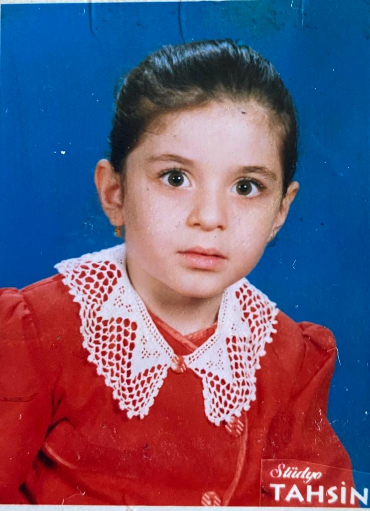
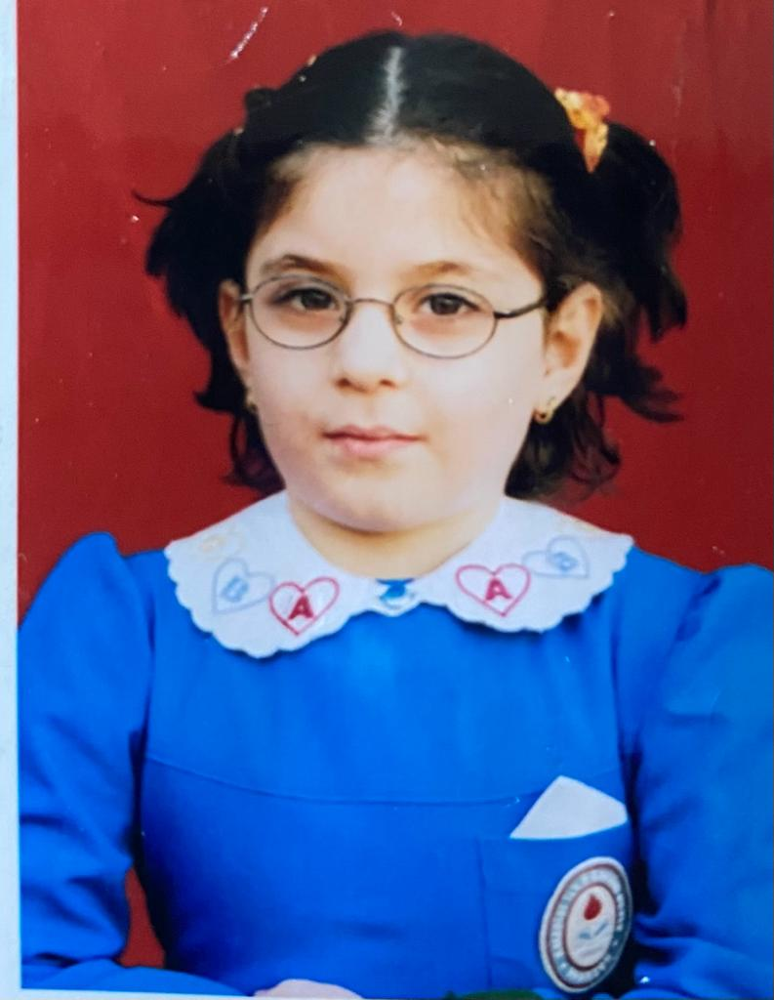
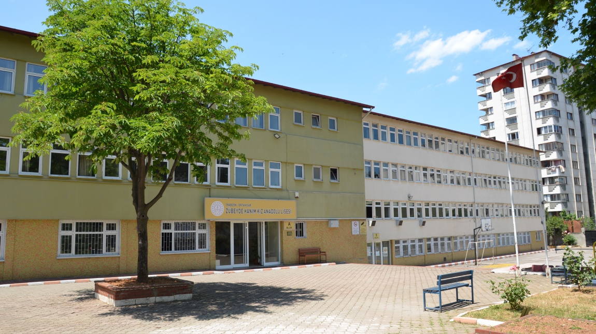
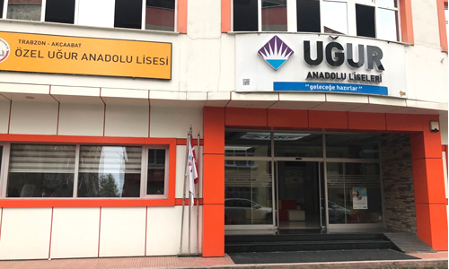
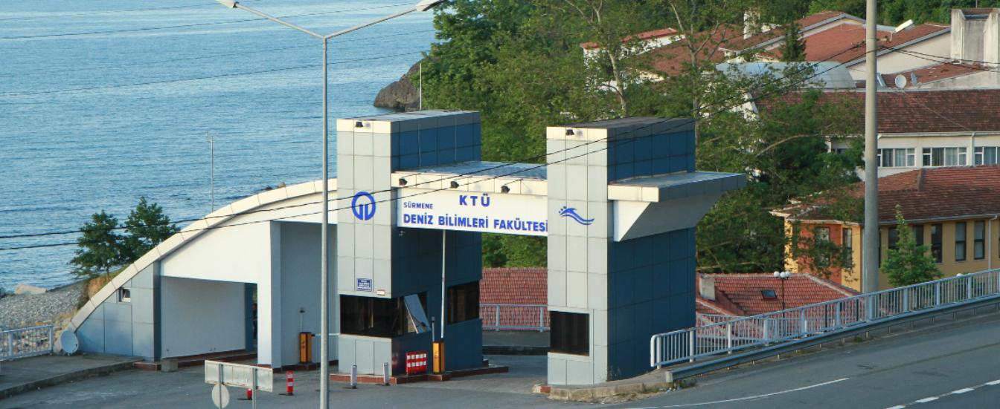
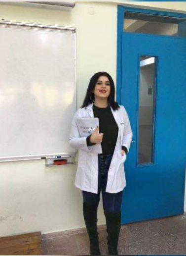

Merhaba,ben Ayşenur.Size biraz kendimden bahsetmek istedim.10.12.1998 tarihinde Trabzon'da doğdum.Sizlere aile hayatım,okul hayatım,yapmayı sevdiğim şeylerden,sevdiğim müziklerden vesaire bahsedeceğim.
Kişilik Özelliklerim
Ben aslında çok duygusal ve hassas bir insanımdır.Fakat dışarıya bunu göstermekten hep korkarım.İnsanlara güçlü görünme takıntım vardır.Onun haricinde yardımsever bir insan oldum her zaman.Hayat mottom insan insana muhtaçtır sözüdür.Bunların yanında kolay sinirlenen bir yapım var.Ama yaptığım hataları düzeltmek içinde elimden geleni yaparım.Değer verdiğim insanlar için herşeyi yaparım.Dobrayımdır sözümü esirgemem,süslü kelimeler kullanmayı sevmem.O an ne düşünüyorsam onu söylerim.Benim imza kişilik özelliğim hırsım aslında.Çok hırslı bir yapım var yaptığım bir işi ya en iyi şekilde yaparım yada hiç yapmam.Beni ben yapanın hırsım olduğunu düşünüyorum.
Aile Hayatım
Ben dört kişilik bir aileye sahibim.Annemin adı Hülya,babamın adı Mecit ve ablamın adı da Ezgi.Ablam hayata down sendromlu olarak başladı.Bizim ailemizin gözbebeğidir.Ona tüm aile bireyleri olarak daha temkinli ve özverili yaklaştık.Benim için zorlukları oldu.Hayatımın her anında ablamı koruyup kollamak zorunda kaldım.Ona dışarıdan bi zarar gelmesini kaldıramazdım.Kendi ihtiyaçlarını görebilecek kadar herşeyi öğretmeye çalıştım.Şuan 26 yaşında ve evde ki çoğu ihtiyacını tek başına giderebiliyor.Onu çok seviyorum.Babam ile yaklaşık 14 senedir ayrıyız.Senede bir görüşme şansımız oluyor.Daha önce zorlu tekstilde çalışıyordu.Şirket iflas durumuna geldiği için babamı işten çıkardılar.O dönem zorluklar çektik.Sonra babam gemi işine başlamaya karar verdi.Gemicilik kursuna gitti ve sınavlarını başarıyla verdi ve gemiye çıktı.Hala gemide usta gemici olarak çalışıyor ve dünyayı geziyor.Annem ev hanımı.Daha önceden doktorlar odasında sekreterlik yapıyormuş.Ablam doğduktan sonra özel durumu olduğu için işi bırakmış ve ev hanımı olarak hayatına devam etmiş.
Okul Hayatım
Anaokulu
Okul hayatıma anaokulu ile başladım.Anaokuluna ablam ile birlikte gittim.Kaledibi ilköğretim okulunun anaokuluna gittim.

İlkokul ve Ortaokul
İlkokul hayatıma da aynı okulda Kaledibi İlköğretim okulunda devam ettim.Benim zamanımda ilkokul 5 sene idi.5 senemi ilkokulda geçirdim.5 sene sonra 6.sınıfta yine okulumun ortaokulunda eğitim hayatıma 3 sene daha devam ettim.

Lise
Lise hayatım biraz karışık geçti aslında.4 tane okul değiştirdim.Lise hayatımın hikayesi şöyle başladı.Bizim dönemimizde SBS sınavı vardı.6,7 ve 8. sınıfın sonunda yapılıyordu.3 sınav puanının ortalaması alınıp ona göre liseye yerleşiyorduk.İlk iki sınavım güzel geçmişti fakat 3. sınavımda ağır bronşit geçiriyordum ve hiç birşey yapamadım.Puanımın yettiği anadolu liseleri vardı fakat ailem tercihlerime karıştığı için giremedim ve açıkta kaldım.İlk girdiğim lise Trabzon Zübeyde Hanım Kız Meslek Lisesiydi.Oraya adapte olamadım ve Akçaabat Çok Programlı Lisesine geçiş yaptım.Orada okurken bazı sağlık problemlerimden dolayı örgün eğitime devam edemedim ve açık liseye geçmek zorunda kaldım.Açık liseden de 12.sınıfta ayrılıp Akçaabat Özel Uğur Lisesine geçiş yaptım ve son senemi orada tamamladım.
 Zübeyde Hanım Anadolu Kız Lisesi
Akçaabat Çok Programlı Lise
 Akçaabat Özel Uğur Anadolu Lisesi
Üniversite
Sallantılı bir lise hayatından sonra üniversiteyi kazanmayı başarmıştım.Karadeniz Teknik Üniversitesi'nde su ürünleri mühendisliği ve gemi inşaatı mühendisliği okudum.Fakat başta hevesli olsamda okumaya başladıktan sonra mesleklere olan ilgim azaldı.Farklı şeylere yönelmek istedim.
 KTÜ Deniz Bilimleri Fakültesi

Güncel Hayatım
Şuan güncel olarak okuduğum meslekleri yapmamaktayım.Okul bittikten sonra farklı arayışlara girdim ve Metawold'le tanıştım.Bilgisayarla ilgili alakalı olduğum için yazılım alanına yönelmek istedim.Şuan da Metaworld'de Full Stack Develepor olmak için öğrenciyim.
İletişim için fotoğrafa tıklayabilirsiniz.
İlgi Alanlarım
Çocukluğumdan gelen bir oyun merakım var.Oyunun her türlüsünü severim aslında.Bilgisayar oyunları önceliğim fakat kutu oyunlarını da severim.Bisiklet sürmeyi,sohbet etmeyi,yeni insanlar tanımayı,yardımlaşarak iş yapmayı severim.Şuan ki en büyük ilgi alanım yazılım.Zamanımın çoğunu yazılım alanı için harcıyorum.
Sevdiğim Müzikler
Mahmut Orhan - Feel feat. Sena Sener
Edward Maya Vika Jigulina - Stereo Love
Puan ve Değerlendirme
Son olarak sizinde böyle bir çalışmanız var ise yüklemeniz beni mutlu eder.Aşağıdan yükleyebilirsiniz.